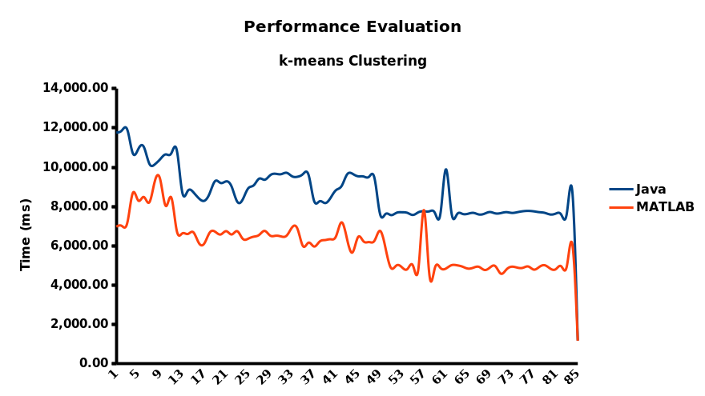
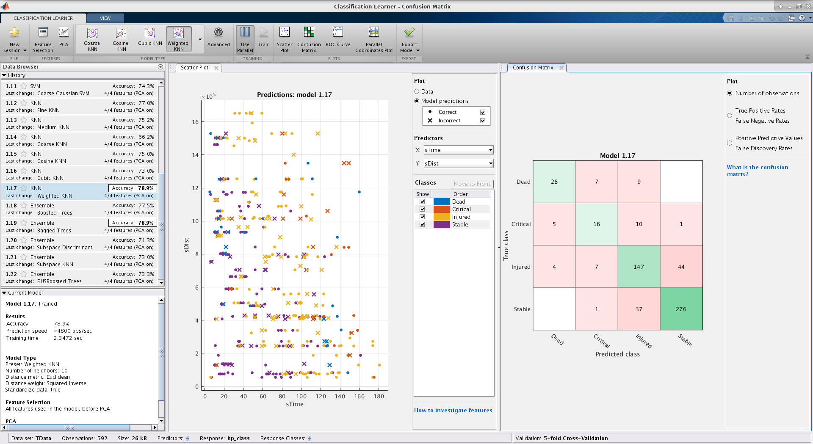

MATLAB® Machine Learning Tutorial
RoboCup Rescue Simulation League
Arnoud Visser, Luis G. Nardin, and Sebastian Castro
Table of Contents
- Introduction to AI and Machine Learning (ML)
- Artificial intelligence
- Machine learning
- Deep learning
- AI and ML Techniques in RCRS
- AI for Precomputation
- Path Planning (A*, Dijkstra)
- ML for Precomputation
- Clustering (K-Means++)
- ML for Task Allocation
- Conclusion
Introduction to AI and Machine Learning (ML)
Introduction to AI
- The question is: 'What is Artificial Intelligence'?

Introduction to AI
- The answer of Russell and Norvig: 'A problem-solving
agent'!

Illustration courtesy Stuart Russell and Peter Norvig, Artificial Intelligence - a Modern Approach, Pearson.
Types of AI Problems
- Basically... everything robots do!

Terminology

Types of AI Algorithms

Machine Learning
- Subset of AI
- Machine modifies its own algorithm/model/policy/etc. using data
- Human controls the "rules" of how this "learning" occurs,
e.g.
- Choosing a model and its initial state
- Choosing a learning algorithm
- Supplying data
- Enforcing constraints
- Machine applies learning results autonomously on new data/environments/conditions/etc.
Types of ML Problems (and Examples)
- Classification:
- Binary: Detecting occupancy in a room
- Multi-class: Detecting the type of animal in an image
- Regression: Predicting housing costs
- Object detection: Locating all pedestrians in an image
- Generation: Computer-generated music from input genre
Types of ML: Unsupervised Learning
- Finding patterns from unlabeled data
- Machine develops its own insights and we have to make sense of them

Types of ML: Supervised Learning
- Determining a model from labeled data
- Goal: Identify labels accurately on new, independent data

Types of ML: Supervised Learning
- Perceptron: The first supervised learning approach
- Use optimization to parameterize a linear classifier
- Other supervised learning approaches extend this with more complex models and learning techniques

Types of ML: Reinforcement Learning
- Technically, a type of supervised learning
- Human provides a mathematical cost/reward function
- Machine repeatedly acts in simulation or real-world trials, evaluates reward, and "learns" to maximize reward over time

Deep Learning
- Not a type of machine learning -- can be unsupervised, supervised, or reinforcement
- Example: "Deep reinforcement learning"
- "Deep" refers to neural networks with many layers
- More layers = more nonlinear = better explains complex systems

AI and ML Techniques in the
RoboCup Rescue Simulation League
Rescue Simulation Challenges
- Task allocation with uncertainty
- Coalition formation
- Cooperation
- Distributed versus centralized control
- Communication
Rescue Simulation Tasks in ADF
- Path Planning
- Clustering
- Target Detector
AI and ML for Rescue Simulation
- Path planning
- A*, Dijkstra, depth-first
- Clustering
- K-Means, K-Medoids, Hierarchical Clustering, Gaussian Mixture Models
- Task Allocation
- Supervised Learning
- Classification
- Regression
- Supervised Learning
AI for Precomputation
- Path Planning (A*, Dijkstra, depth-first)
Path-Planning and Artificial Intelligence
- A problem-solving agent applies a search strategy on
the problem:

- So, we need a problem formulation (both in Java and MATLAB®) .
Illustration courtesy Stuart Russell and Peter Norvig, Artificial Intelligence - a Modern Approach, Pearson.
Path-Planning as Graph Search
- Imagine an agent that travels in Romania:

- The goal is to get in Bucharest (from Arad).
Illustration courtesy Stuart Russell and Peter Norvig, Artificial Intelligence - a Modern Approach, Pearson.
Path-Planning as Graph Search
- So, imagine an agent that travels on the TestMap:

- The goal is to get in [905, 249, 298, 938, 939, 940]
(from node 976).
Path-Planning as Graph Search
- You not only have to find one solution:

- You also have to decide what is the best solution.
Path-Planning as Graph Search
- And you have to find it fast when the map gets bigger:
That is where the search strategy gets important

(e.g. Dijkstra vs A*)
A* Graph Search
- The Agent Development Framework has an A* implementation:
The problem is solved in 9 steps.

This Java code is provided by Shunki Takami et al.
A* Graph Search
- The steps resembles Uniform-Cost Search:
With a heuristic cost function Path-Cost this is A*

(with path so-far it is Dijkstra's algorithm).
Illustration courtesy Stuart Russell and Peter Norvig, Artificial Intelligence - a Modern Approach, Pearson.
Multi-Agent decision making
- The actions of the agents are parameterized with the paths.

- You need full control and insight in the characteristics of the paths.
Illustration courtesy Mircea Traichioiu, Hierarchical Decision Theoretic Planning for RoboCup Rescue Agent Simulation, Master thesis, University of Amsterdam, 2014.
Export Java data structure to MATLAB®
For (Entity next: this.worldInfo.getEntities() ) {
loc = this.worldInfo.getLocation(next.getID());
matlab.eval("G=addnode(G,table(next.getID(),loc.first(),loc.second());");
}
For (Entity next: this.worldInfo.getEntities() )
Collection areaNeighbours = next.getNeighbours();
for(entityID neighbour : areaNeigbours) {
matlab.eval("G=addedge(G,find(next.getID()),find(neighbour.getID());");
}
}
matlab.eval("save('graph.mat',G);");
Real Java-code
- A little more complex:

- This code adds batches. An alternative is to create two complete lists and feed it at once to a MATLAB®-function.
Effect batch-size
- Adding the nodes to a graph of the Kobe map:
no batch 15,7999 s batch of 25 1,6564 s batch of 250 0,6677 s batch of 2500 0,42233 s - For Paris the whole process takes 52,75 s.
Execute this Java-code as precompute process
cd ~
mkdir git
cd git
git clone
https://github.com/roborescue/rcrs-server.git
cd
rcrs-server
ant clean-all
ant complete-build
cd boot
./start-precompute.sh -m
../maps/gml/kobe/map/ -c ../maps/gml/kobe/config/
cd ~
mkdir git
cd git
git clone
https://github.com/IntelligentRoboticsLab/Joint-Rescue-Forces.git
cd Joint-Rescue-Forces
./precompute-matlab.sh 1 0 1 0 1 0
localhost
Load the graph into MATLAB workspace
load ../data/graph.mat
plot(G,'NodeLabel',cellstr(G.Nodes.ID));
figure(2)
plot(G,'xdata',G.Nodes.X,'ydata',G.Nodes.Y,'NodeLabel',cellstr(G.Nodes.ID));
Visualize Graph
- The (x, y) positions of the nodes are known, but
only the edges matter:


- That is the connectivity and the distances of the edges.
Plan shortest path
from = find(G.Nodes.ID=="36373");
target =
[find(G.Nodes.ID=="33976") find(G.Nodes.ID=="35378")
find(G.Nodes.ID=="34146")];
[TR,D] =
shortestpathtree(G,from,target,'OutputForm','cell');
Path found
- There is a clear winner (both in number of steps and
distance):

D =
252553 68434 397069
TR =
{1×37 double}
{1×9 double}
{1×66 double}
Highlight_path is a function of Peter Corke's Robotics toolbox
Find paths faster
- You can use different algorithms to plan a path:

PG.shortestpath(M(char("36373")),M(char("33976")),'algorithm',
'depth-first', 'timer')
costs=256829, time=0.087983
PG.shortestpath(M(char("36373")),M(char("33976")),'algorithm',
'Astar', 'timer')
costs=252553, time=0.095392
PG.shortestpath(M(char("36373")),M(char("33976")),'algorithm',
'Dijkstra', 'timer')
costs=252553, time=0.202984
shortestpath is modification of Peter Corke's open source Astar implementation.
Modify travel cost after disaster
- After the earthquake building have collapsed and roads are
(partly blocked):

- In that case the travel costs can be increased:
neighbours = PG.neighbours(909);
edges = PG.edges(909);
new_cost = 4 .* PG.cost(edges);
[path_index,C] =
PG.shortestpath(M(char("36373")),M(char("33976")),'algorithm',
'Astar');
Blockade illustration is courtesy Ali Modaresi.
Astar will go around blockade
- The edge was not removed, the travel-cost were only
increased:

- The new path is the red path.
- This can be done for each agent individually, based on observations and team-communication.
ML for Precomputation
- Clustering (K-Means++)
Clustering
- Finding patterns from unlabeled data
- Basically, clustering is the task of dividing
data points into a number of groups
- data points in the same group more similar to each other than to those in other groups
Clustering
- Finding patterns from unlabeled data
- Generally, clustering is the task of dividing
data points into a number of groups
- data points in the same group more similar to each other than to those in other groups
How is clustering useful to Rescue Agent Simulation?
Clustering for
Agent Simulation
- Teams use clustering during precomputation mostly for
- partition the map by grouping buildings and roads based on their location (x, y)
Commonly, Partition Clustering Methods are used, such as K-Means++ or K-Medoid
Clustering for Agent Simulation
- Teams could also use clustering to group buildings based on
their propensity to fire ignition inferred from properties like
floorstotalAreafierynesstemperature
- Gaussian Mixture Models (GMM) may provide better results
- However, the clustering method
- maybe too complex to develop and maintain, or
- there is a need to compare different methods
MATLAB® Clustering
- MATLAB® provides several clustering
algorithms:
- K-Means (Lloyd, 1982)
- K-Medoids (Kaufman & Rousseeuw, 1987)
- Hierarchical Clustering (Kaufman & Rousseeuw, 2008)
- Gaussian Mixture Models (Marin et al., 2005)
- Hidden Markov Models (Baum & Petrie, 1966)
Generate Data
- Generated data format
buildingID;x;y;totalArea;floors
40964;1811658;238270;129;1 49162;1148956;194238;876;1
57356;683596;1257545;500;1 57358;657794;1270839;801;1
24591;1828352;222217;163;1
Execute Java-code to generate data
cd rcrs-server/boot
./start.sh -m
$JOINT_RESCUE_FORCES/tutorial/paris/map/ -c
$JOINT_RESCUE_FORCES/tutorial/paris/config/
cd Joint-Rescue-Forces
./data-generation.sh
Import Data
- Import Selection
- Import Data
- Generate a Script
- Generate a Function
MATLAB® Processing
%% Perform k-Medoids clustering and plot the results
numMedoids = 5;
[indices,centroids] = kmeans([buildings.x
buildings.y],numMeans);
figure
hold on
gscatter(buildings.x,buildings.y,indices)
plot(centroids(:,1),centroids(:,2),'kx','MarkerSize',10,'LineWidth',2)
hLegend = legend;
hLegend.String{end} = 'centroids';
title('k-Medoids Clustered Map'); xlabel('X position');
ylabel('Y position');
Hands-on
addpath('tutorial/scripts/clustering')
addpath('tutorial/data/unsupervised')
building_cluster
Call MATLAB® from Java
- Connect to MATLAB®
ml = MatlabEngine.startMatlab();
- Prepare the data
double[][] mlInput
- Run the
k-meansfunctionObject[] mlOutput = ml.feval( 2, "kmeans", (Object) mlInput, this.clusterSize, DISTANCE, this.distanceMetric, MAX_ITER, this.maxIter );
- Process the results
double[] mlIndex = (double[]) mlOutput[0];double[][] mlCenter = (double[][]) mlOutput[1];
Connect to MATLAB®
- Start a MATLAB®
MatlabEngine ml = MatlabEngine.startMatlab(); - Connect to a shared MATLAB®
if ( MatlabEngine.findMatlab().length > 0 ) {
MatlabEngine ml = MatlabEngine.connectMatlab();
}
- Requires an instance of MATLAB® open
- Session shared
matlab.engine.shareEngine
Call MATLAB®
- Evaluate an expression
[output1,...,outputN] = eval(expression)
Example:
ml.eval('cd tutorial;')
- Evaluate a function
[y1,...,yN] = feval(fun,x1,...,xM)
Example:
Object[] mlOutput = ml.feval( 2, "kmeans", (Object) mlInput, 10, DISTANCE, 'cityblock', MAX_ITER, 100 );
Clustering Performance
ML for Task Allocation
- Methodology for Target Selection
ML for Task Allocation
- MATLAB® can help optimize rescue operations by predicting more accurately certain future state
- Example
Ambulance teams can optimize their rescue operations by predicting more accurately the chance of potential victims to survive.
Methodology
- Generate data
- Import data into MATLAB®
- Train model in MATLAB®
- Integrate into ADF
- Refine the target selection model
Generate Data
- Start Rescue Time
- Initial Distance to Refuge
- Initial HP
- Initial Damage
- Burriedness
- End Time
- End Distance to Refuge
- End HP
- End Damage
- Generated data format
id;sTime;sDist;sHP;sDamage;eTime;eDist;eHP;eDamage
2146824103;12;934003;10000;0;56;0;8500;0
1285094217;12;1014231;10000;0;98;0;7000;80
1329519353;16;74983;10000;0;62;0;8500;0
2029710813;48;245461;8500;0;122;0;4500;80
802454469;33;1254470;9500;0;109;0;6500;80
1684298116;43;664753;9500;0;96;0;8500;0
Execute Java-code to generate data
cd rcrs-server/boot
./start.sh -m
$JOINT_RESCUE_FORCES/tutorial/paris/map/ -c
$JOINT_RESCUE_FORCES/tutorial/paris/config/
cd Joint-Rescue-Forces
./data-generation.sh
Import Data into MATLAB®
addpath('tutorial/scripts/clustering')
addpath('tutorial/data/unsupervised')
trainingData =
importRescueData('training.csv');
validationData =
importRescueData('validation.csv');
TData =
trainingData(:, 2:end);
VData = validationData(:, 2:end);
Categorize Data
hp_bins = [0 1 3000 7000 10000];
bin_names = {'Dead',
'Critical', 'Injured', 'Stable'};
TData.hp_class =
discretize(TData.eHP, hp_bins, 'categorical', bin_names);
Train model in MATLAB®
- Supervised machine learning methods can be applied to learn associations between observable variables and hidden variables (part of a causal model of the world).
- Estimates of the value of variables of a world model can be
done with
- discrete states (classification)
- continuous states (regression)
Train model in MATLAB®
- We use the MATLAB® Classification Learner app to train a model to predict the chance victims have to survive based on an estimate of the remaining health points (HP) at the end of the scenario simulation.
Classification Learner
Classification Learner
- Classification
- Feature Selection
- Principal Component Analysis (PCA)
- Model Type
- Parallel Execution
- Plots
- Export Model - Export Compact Model
Validation
// VData is the validation data
predictions =
targetSelectorModel.predictFcn(VData);
numCorrect
= nnz(predictions == VData.hp_class);
validationAccuracy
= numCorrect/size(VData,1);
fprintf('Validation accuracy:
%.2f%%\n', validationAccuracy * 100);
- The training and validation steps compose an iterative process whose cycle should be repeated until the validation accuracy is satisfactory.
Integrate into ADF
- Create a function to call the trained model
function predictions = selectTargets(time,dist,hp,damage)
persistent targetSelectorModel
if isempty(targetSelectorModel)
load targetSelectorModel
targetSelectorModel
end
predictors = table(time,dist,hp,damage, ...
'VariableNames',{'sTime','sDist','sHP','sDamage'});
predictions =
int32(targetSelectorModel.predictFcn(predictors));
end
Integrate into ADF
- The function can then be called inside the
calcmethod of theHumanDetectorclass for the ambulance team agents
if ( MatlabEngine.findMatlab().length > 0 ) {
MatlabEngine ml =
MatlabEngine.connectMatlab();
int sTime
= rescueTarget.sTime;
int sDist =
rescueTarget.sDist;
int sHP =
rescueTarget.sHP;
int sDamage =
rescueTarget.sDamage;
int value
= ml.feval( "selectTargets", sTime, sDist, sHP, sDamage );
ml.close();
}
Important
- Use
MatlabEngine.findMatlab()andMatlabEngine.connectMatlab() - Requires a MATLAB® session is Running and
Shared (
matlab.engine.shareEngine)
Target Allocation Strategies
- Ambulance team can combine the classification information with several other information about victims to determine which one to rescue
- Possible policies are
- classify all known victims
- discard the predicted dead, and
- select
- random victim among them
- the closest victim
- the closest victim that is predicted
Critical
Conclusions
In this workshop we have demonstratedthe use of several AI and ML techniques:
- Problem solving
- Path-planning (Astar, Dijkstra)
- Unsupervised learning:
- Classification (k-means clustering of city blocks)
- Supervised learning:
- Classification (k-nearest neighbour prediction of victim class)
- Regression (bagged tree model of remaining HP of victim)
Future Works
- Assess different strategies for task allocation
- Compare different clustering algorithms
- Use JNI to access MATLAB® libraries
- Evaluate the feasibility of implementing a Rescue team in MATLAB®
Thanks
This workshop was created by the Joint Rescue Forces:
of the RoboCup Federation Support for Collaborations program.